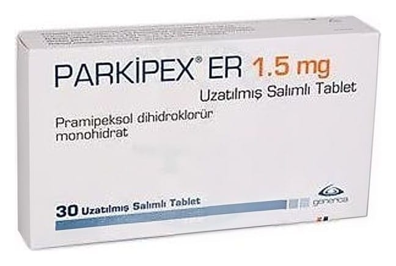

Parkipex ER 1.5 mg Uzatılmış Salımlı Tablet, 30 Adet

Ne için kullanılır
KT · Bölüm 1PARKİPEX ER, pramipeksol adı verilen bir ilaç etkin maddesini içerir ve dopamin agonisti adı verilen bir ilaç grubuna dahildir. Bu grup ilaçlar, beyindeki bazı algılayıcıları (dopamin reseptörleri) uyararak etki gösterir. Dopamin reseptörlerinin uyarılması, beyindeki sinir sinyallerini tetikleyerek vücut hareketlerinin kontrol edilmesine yardımcı olur.
PARKİPEX ER, primer (ilk defa ortaya çıkan) Parkinson hastalığının belirtilerinin tedavisinde tek başına veya levodopa (Parkinson hastalığında kullanılan diğer bir ilaç) ile birlikte kullanılabilir.
PARKİPEX ER 1,5 mg uzatılmış salımlı tabletler, beyaz renkli, oblong şekillidir.
PARKİPEX ER 1,5 mg uzatılmış salımlı tablet, 30 tablet içeren blister ambalajlarda piyasaya sunulmaktadır.